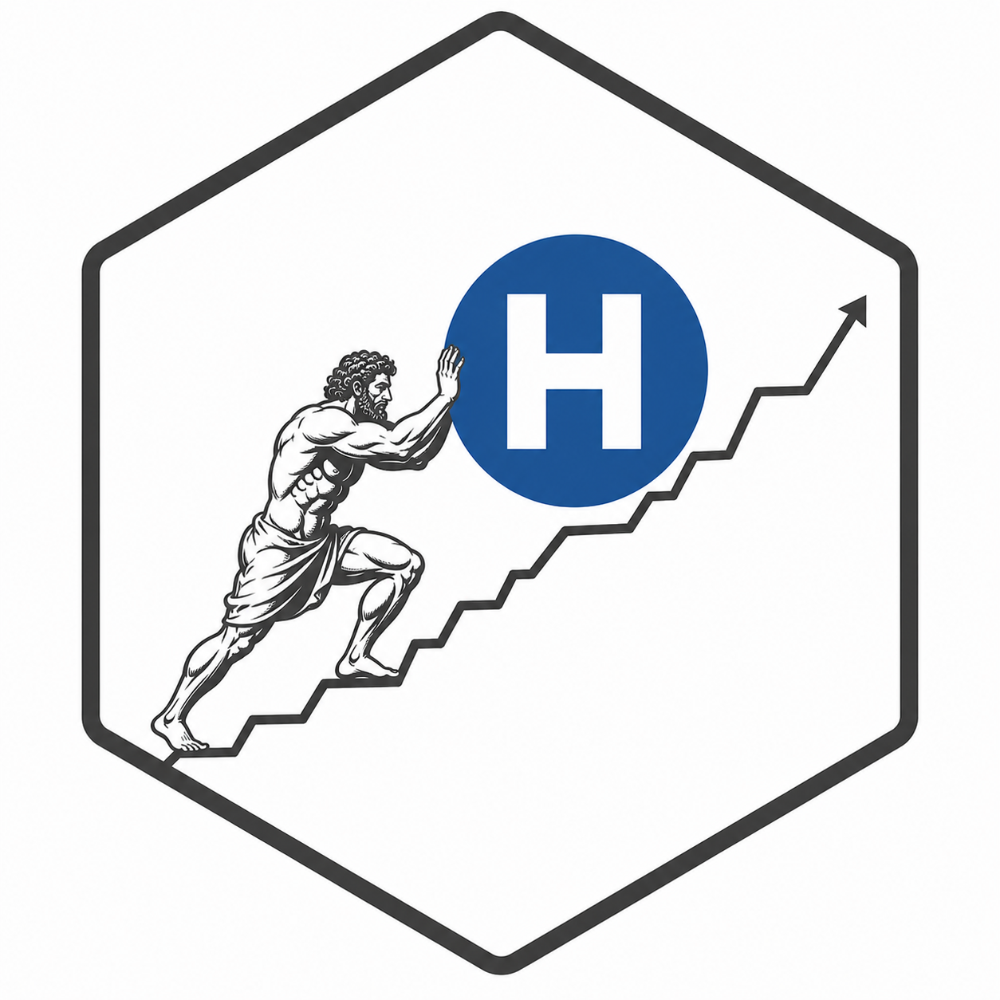
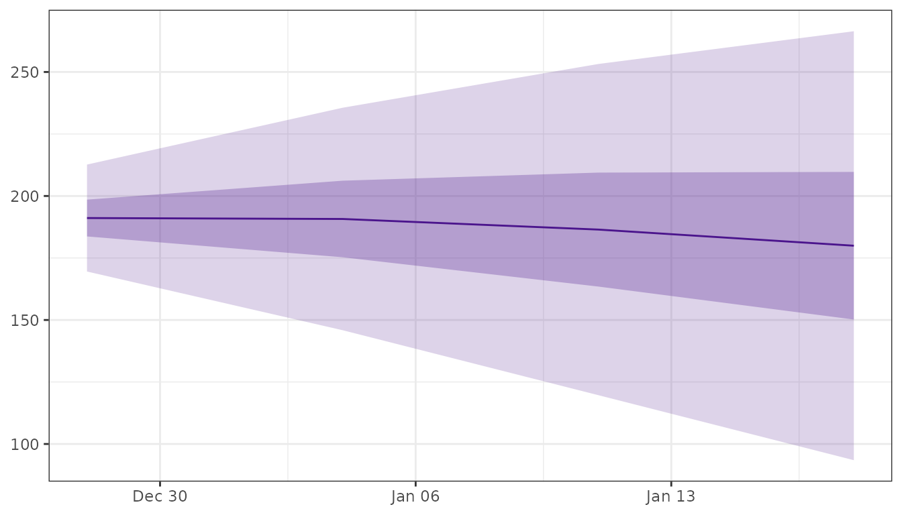
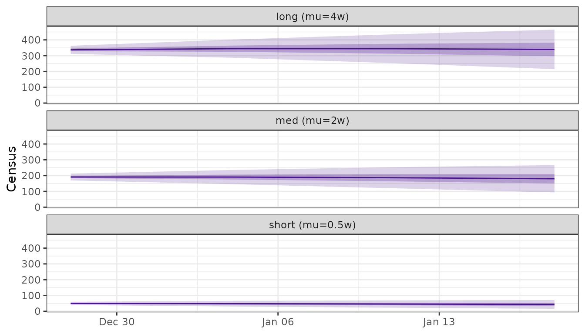
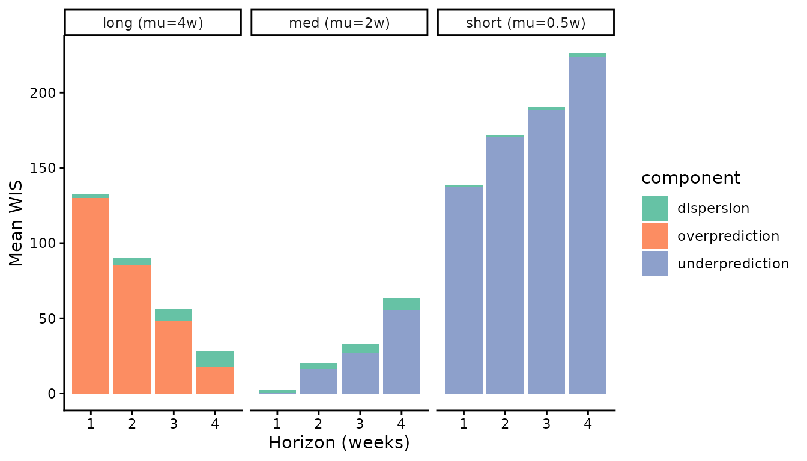

Forecast hospital census from forecasting hubs
Source:vignettes/censcast.Rmd
censcast.RmdPublic-health forecasting hubs (FluSight, COVIDhub, RSVhub) publish admission forecasts. Hospital operations plan around the census, the number of patients in hospital on a given day.
censcast transforms hubverse admission
forecasts into census forecasts by convolving them with a length-of-stay
(LOS) distribution. The result lands back in the hubverse
quantile-forecast schema.
The model
Let be the probability that a patient is still in hospital time-steps after admission. Today’s census is the sum of past admissions, each weighted by their probability of still being here:
Pipeline
You bring three things, all in standard hubverse shape:
- an admission quantile forecast
(
hubData::collect_hub()); - observed admissions covering the
max_staywindow before the forecast (hubData::connect_target_timeseries()); - a LOS distribution (
los_spec()).
In production, the first two come from a hub:
library(hubData)
admission_fc <- connect_hub(s3_bucket("cdcepi-flusight-forecast-hub")) |>
dplyr::filter(target == "wk inc flu hosp",
output_type == "quantile",
model_id == "FluSight-ensemble") |>
collect_hub()
admission_hist <- connect_target_timeseries(
s3_bucket("cdcepi-flusight-forecast-hub")
) |>
dplyr::filter(target == "wk inc flu hosp") |>
dplyr::collect()For this vignette we use the toy datasets flu_forecast
and flu_history shipped with the package:
library(censcast)
library(dplyr)
library(purrr)
library(tidyr)
library(ggplot2)
los <- los_spec("negbin", mu = 2, k = 1.7, max_stay = 8)
census_fc <- fcast_census(flu_forecast, los, flu_history)
plot_fan(census_fc)
Comparing LOS assumptions
Without ground-truth census, LOS is the dominant assumption. Run several specs and compare:
los_specs <- list(
"short (mu=0.5w)" = los_spec("negbin", mu = 0.5, k = 1.7, max_stay = 8),
"med (mu=2w)" = los_spec("negbin", mu = 2, k = 1.7, max_stay = 8),
"long (mu=4w)" = los_spec("negbin", mu = 4, k = 1.7, max_stay = 8)
)
census_runs <- imap(los_specs, \(los, name) {
fcast_census(flu_forecast, los, flu_history) |> mutate(los = name)
}) |> bind_rows()
plot_fan(census_runs) +
facet_wrap(~ los, ncol = 1)+
labs( y = "Census")
plot_fan() treats any unrecognised column as a
trajectory grouper, so the user-added los column needs no
configuration.
Scoring
Hubverse hubs publish admissions truth, not census truth, so to score
you bring your own. It needs the standard hubverse target-data columns:
target_end_date, target,
location, observation.
The demo below fakes one by convolving observed admissions with a “true” LOS:
true_los <- los_spec("negbin", mu = 2, k = 1.7, max_stay = 8)
observed_census <- flu_history |>
arrange(location, target_end_date) |>
group_by(location) |>
mutate(observation = stats::convolve(observation, rev(true_los),
type = "open")[seq_along(observation)]) |>
ungroup()
scores_by_los <- imap(los_specs, \(los, name) {
fcast_census(flu_forecast, los, flu_history) |>
score_census(truth = observed_census) |>
mutate(los = name)
}) |> bind_rows()
scores_by_los |>
summarise(across(c(overprediction, underprediction, dispersion), mean),
.by = c(los, horizon)) |>
pivot_longer(-c(los, horizon), names_to = "component", values_to = "wis") |>
ggplot(aes(horizon, wis, fill = component)) +
geom_col() +
facet_wrap(~ los) +
scale_fill_brewer(palette = "Set2") +
labs(x = "Horizon (weeks)", y = "Mean WIS") +
theme_classic()
API
| Function | Role |
|---|---|
los_spec() |
Build a LOS survival vector. |
fcast_census() |
Convolve hubverse admissions × LOS → hubverse census. |
plot_fan() |
Quantile fan chart, returns a ggplot. |
score_census() |
Score against observed census via scoringutils. |